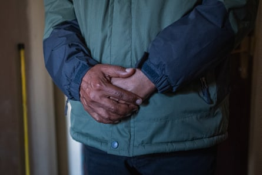
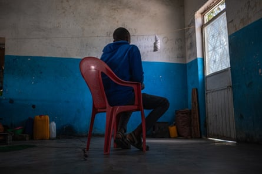
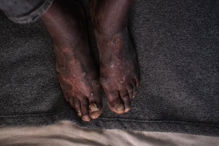
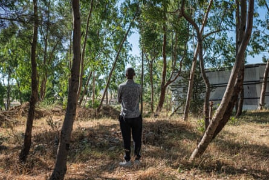
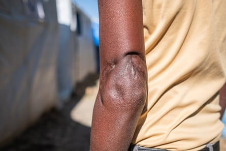

I n the darkened office of his church, the preacher recalls how he was tortured. His guards would put a wooden pole behind his bent knees, suspend him upside down from the ceiling and beat the soles of his feet with rubber pipes.
In the two decades before he fled Eritrea with his family in 2020, he spent eight years in detention. Some of it was in airless, underground cells so cramped there was no room to lie down. At other times he was made to break stones and harvest crops. Then there were the torture chambers.
“Whenever you go into prison, they don’t tell you how long you will stay,” he says.
His crime, in the eyes of Eritrea’s authorities, was twofold: he preached in a country where religious freedom is restricted, holding clandestine prayer sessions with congregants; and he resisted compulsory military conscription.
The preacher spent eight years in detention over two decades, including some in torture chambers.Photograph: Fred Harter
Today, he lives in neighbouring Ethiopia . Like the other former inmates of Eritrea’s prisons interviewed in Ethiopia for this article, he requested anonymity. Even here, they fear the regime’s spies will track them down.
Their testimony offers a rare glimpse into the vast gulag system operated by Eritrea, one of the world’s most repressive single-party states . They describe beatings, stress positions and other mistreatment, as well as unsanitary conditions, forced labour, desperate breakout attempts and deaths at detention facilities across the country.
A small nation of 3.5 million people on the Red Sea, Eritrea has earned a reputation as the “North Korea of Africa”. Since it gained independence from Ethiopia in 1993, it has never held a general election or implemented a constitution. Its ruler, Isaias Afwerki, who became president after leading the liberation struggle, has banned opposition parties , independent media and civil society groups. Foreign journalists are not allowed to enter unless they agree to report positively.
Adherence to religious creeds outside the four state-sanctioned denominations is also outlawed. Although it is rich in mineral deposits, Eritrea’s main export is people: roughly a third of Eritreans live outside the country , having fled poverty, repression and its policy of indefinite military service , which the UN likens to slavery .
“Being a soldier in Eritrea is terrible,” says a former detainee. “If you raise your hand and speak out, they take you away. There is no freedom.”
‘There is no freedom’: a former Eritrean detainee now living in Tigray.Photograph: Fred Harter
In 2023, Eritrea was the fourth-biggest source of people arriving in the UK on small boats, with 2,662 arrivals. But the bulk of Eritrean refugees stay in east Africa. Ethiopia hosts the largest number , with 158,000 in 2023.
Those still inside Eritrea risk disappearing into its extensive detention system, which includes underground cells at military bases and facilities so secret that even the inmates do not know their names. In some centres, prisoners are sealed in sweltering shipping containers in the desert.
“It’s a system designed to spread terror and exert control over the lives of Eritreans that plays a very important role in stifling any political dissent,” says Mohamed Abdelsalam Babiker, the UN’s special rapporteur on the situation of human rights in Eritrea.
I n 2014, the UN estimated Eritrea’s military prisons alone held at least 14,000 people . Detainees include opposition politicians, journalists and religious leaders, as well as those who evade the draft. The figure probably increased during the 2020-22 civil war in Ethiopia, during which Eritrea fought alongside the Ethiopian government and press-ganged more of its citizens into military service, says Babiker.
Torture and sexual abuses of conscripts are commonplace, according to Babiker’s office . One former prisoner, who spent 12 years in Eritrea’s army, recalls how he was made to stand up to his ankles in scorching desert sand for hours at a time while in detention. He takes off his plastic sandals to reveal feet covered in blotchy red scars. Another describes being hog-tied in a stress position known as the “helicopter”. A third says he was beaten so severely he became blind in one eye.
Scars sustained by a prisoner who was tortured by being forced to stand ankle deep in hot desert sand.Photograph: Fred Harter
All three were imprisoned for overstaying their annual leave from the army to work on farms to make extra money for their families. “They were struggling to survive, and my salary was not enough to support them,” says one.
Many detainees spend their prison terms shrouded in darkness. Another former prisoner, who spent eight months in a facility known as Tract B, says he was held in an underground bunker with hundreds of others. It was so dark, he could barely make out his hands when he held them in front of his face.
Inmates with diabetes and high blood pressure were denied medication, he says. All were infested with lice. Because of the lack of space, the detainees sat in long lines, each with their legs outstretched to make room for the person in front of them. “You could stand for a few minutes, but that was it,” he says. “There is nowhere to go. My joints were constantly aching.”
To pass the time, the prisoners would share their life stories and memories of home. But they would avoid politics, afraid of being betrayed in the darkness by a government informer. Five people died in the cell, he says. Their bodies were passed overhead by the prisoners to guards at the door. “It was almost a relief when someone died,” he says. “It gave you a chance to stretch your legs.”
An Eritrean refugee who described conditions in Adi Abeito prison as ‘like a hell’.Photograph: Fred Harter
Four former detainees describe similar conditions at other sites. At one facility called Adi Abeito the inmates were packed so tightly they would sleep in shifts on the hard floor. The guards deterred breakout attempts by scattering broken glass in the barren field where the barefooted prisoners went once a day to go to the toilet.
“It was like a hell,” says a former prisoner, who was also imprisoned for overstaying his leave but returned to his unit after the authorities arrested his father. Having fled to Ethiopia in 2018, he worries about his teenage son still in Eritrea.
“He is 17 years old, nearly military age. All the things that happened to me will happen to him.”
Escaping Eritrea is fraught with danger. Guards on the borders have orders to shoot those attempting to cross . At a camp in Tigray, Ethiopia’s northernmost region, an Eritrean refugee pulls up his sleeve to show a disfiguring scar from a gunshot wound, sustained as he crossed a river into Ethiopia. A woman tells how she was raped in front of her young children at the border.
The disfiguring scar from a gunshot wound sustained by a refugee as he fled across a river into Ethiopia.Photograph: Fred Harter
Independence had brought hopes of democracy to Eritrea. But after a bloody border war with Ethiopia from 1998 to 2000 , the regime tightened repression, shelving plans to adopt a new constitution and arresting journalists and reformist politicians. They include Dawit Isaak, co-owner of Setit, Eritrea’s first independent newspaper, who has spent 23 years behind bars without trial.
Dawit’s daughter, Betlehem, who lives in Sweden, says his family does not know where he is being held, only that he is alive. In November, her father received a prominent Swedish human rights prize . “We can only imagine what he has been through,” says Betlehem. “In 2001, the last time I saw him, he could barely walk because of the torture.”
She longs to return home, a dream shared by the preacher. “When I left Eritrea, I was crying,” he says. “I didn’t want to leave. It is a beautiful country.”